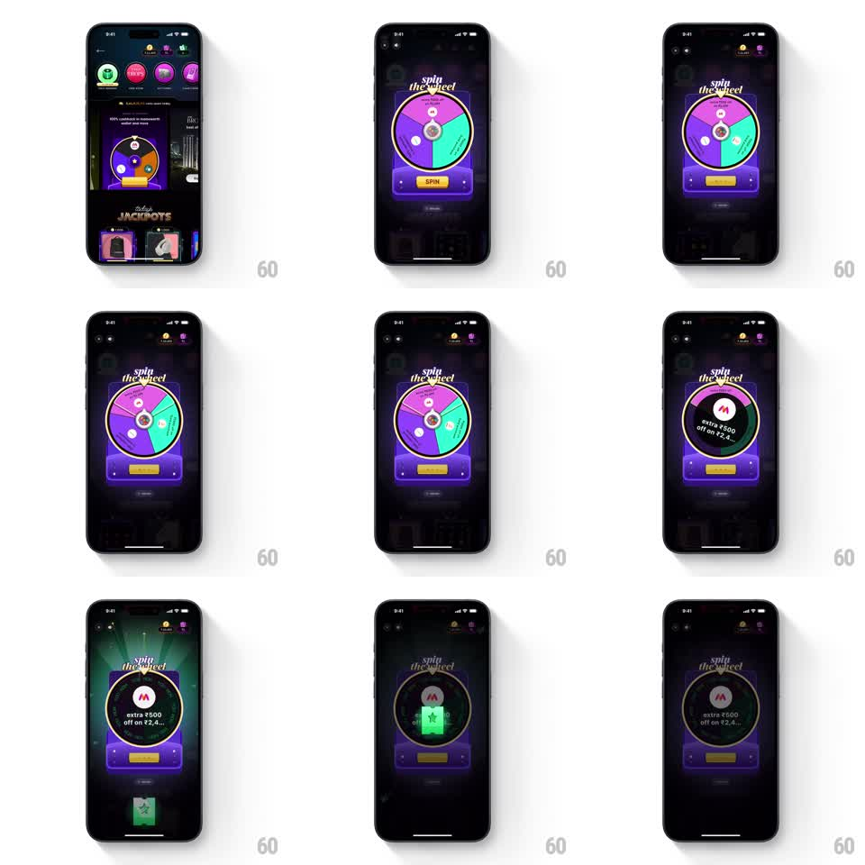

Media
Frame-by-frame

Rebuild this interaction 1:1: CRED's spin-the-wheel game - a neon prize wheel on a dark jackpot screen that spins with finger-flick velocity, decelerates with realistic friction, lands on a wedge with a glowing win state, and deals a sliding reward ticket.

Rebuild this interaction 1:1: CRED's spin-the-wheel game - a neon prize wheel on a dark jackpot screen that spins with finger-flick velocity, decelerates with realistic friction, lands on a wedge with a glowing win state, and deals a sliding reward ticket.
## Integration
Integration: stack-agnostic spec - springs given as stiffness/damping, timed motions as duration + curve; map every value to your framework and animation library of choice.
## Scene
Dark CRED jackpots screen (game icons row on top, JACKPOTS header, ticket carousel below). Center: a circular prize wheel divided into colored wedges (purple, green, magenta, teal) with small prize icons, ringed by light bulbs, with a pointer at top, a yellow SPIN button beneath, and "spin the wheel!" script lettering above. Win state: a black circular reward card with a brand logo and offer text ("extra Rs 500 off on Rs 2,4..") replaces the wheel face, then a green ticket stub slides up from below.
## Motion spec
Pattern: flick-to-spin prize wheel with friction deceleration and win reveal.
- Tap SPIN (or flick): the wheel accelerates to ~720deg/s over 200ms, then decelerates with exponential friction over ~3.5s.
- Rim bulbs chase clockwise throughout the spin (100ms per step) and freeze when the wheel stops.
- As the wheel slows past 60deg/s, the pointer ticks against each passing peg (rotate -12deg and snap back, 40ms per tick).
- Landing: the wheel settles with a small elastic recoil (rotate back ~4deg, spring ~300/18); the winning wedge's bulb cluster glows.
- Win reveal: the wheel face iris-transitions to the black reward card (scale 0.9 -> 1.0 + crossfade, 300ms) with a radial glow pulse behind it; green light rays sweep behind the card (rotating 20deg, 1.2s loop).
- The reward ticket slides up from below the card (300ms ease-out, spring settle ~280/22).
## Calibration
- Deceleration curve is the whole game - long smooth slowdown, ticking near the end, no linear braking.
- The pointer ticks must sync to peg positions, accelerating and slowing with the wheel.
## Reduced motion
One 1.2s ease-out spin of ~360deg; no bulb chase, no tick; win card and ticket fade in over 200ms.
## Don't miss
- The reward card keeps the wheel's circular frame - the win happens inside the wheel, not on a new screen.
- Bulb glow persists on the winning wedge after landing.